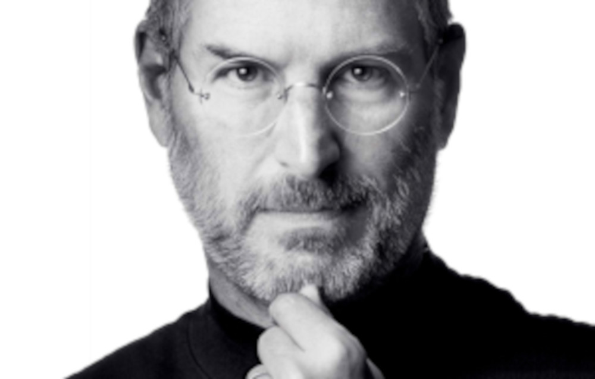
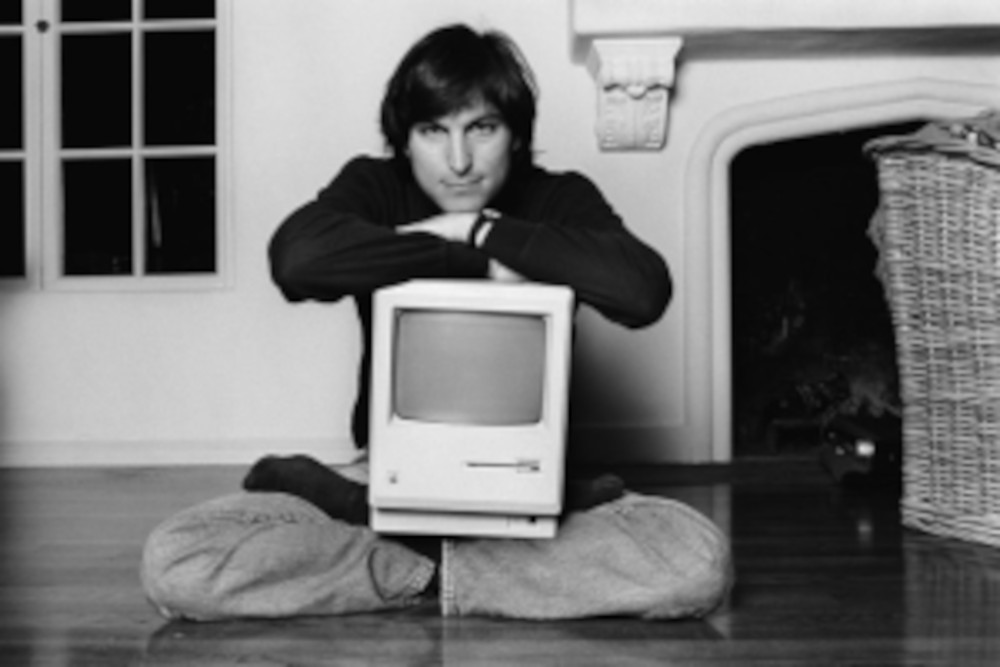

🍎 A História do macOS
Tudo aquilo que você sempre quis saber sobre o sistema que redefiniu a experiência visual dos computadores O macOS é o sistema operacional desenvolvido pela Apple para seus computadores da linha Macintosh. Diferente do Windows, que foi criado para funcionar em máquinas de vários fabricantes, o macOS sempre foi projetado para rodar exclusivamente em computadores da própria Apple. Essa integração entre hardware e software se tornou uma das principais características da marca.
👨💻 O Criador e a Filosofia por Trás do Sistema
O macOS nasceu dentro da Apple, empresa fundada em 1976 por Steve Jobs, Steve Wozniak e Ronald Wayne. Embora Wozniak fosse o grande responsável técnico pelos primeiros computadores da empresa, foi Steve Jobs quem impulsionou a visão de um computador com interface gráfica simples, elegante e intuitiva.
A inspiração veio após uma visita ao laboratório Xerox PARC, onde Jobs conheceu o conceito de interface gráfica com janelas, ícones e uso de mouse. Ele enxergou ali o futuro da computação pessoal e decidiu transformar aquela ideia em um produto comercial.

🖥️ O Nascimento do Macintosh
Em 1984, a Apple lançou o Macintosh original, que utilizava um sistema operacional próprio com interface gráfica revolucionária para a época. Embora ainda não fosse chamado de macOS, foi o embrião do sistema que conhecemos hoje.
O grande diferencial era a experiência visual. Ícones representavam arquivos, pastas podiam ser abertas com O grande diferencial era a experiência visual. Ícones representavam arquivos, pastas podiam ser abertas com um clique e o uso do mouse tornava o computador mais acessível para pessoas comuns, não apenas técnicos. Durante muitos anos, o sistema evoluiu sob o nome “Mac OS clássico”. Ele passou por diversas versões até o final da década de 1990, mas enfrentava limitações técnicas relacionadas à estabilidade e multitarefa.

🔄 A Grande Virada: Mac OS X
No final dos anos 1990, a Apple enfrentava dificuldades financeiras e precisava de uma transformação. Em 1997, Steve Jobs retornou à empresa e iniciou uma profunda reestruturação. Um dos passos mais importantes foi a aquisição da empresa NeXT, também fundada por Jobs anos antes. Dessa fusão surgiu o moderno Mac OS X, lançado em 2001. Ele foi baseado em uma arquitetura Unix, trazendo maior estabilidade, segurança e desempenho. Foi uma mudança radical em relação ao sistema clássico. O Mac OS X introduziu a interface Aqua, com efeitos visuais translúcidos, animações suaves e um design altamente refinado. A Apple também passou a adotar nomes de grandes felinos para suas versões, como Cheetah, Panther, Tiger e Leopard.
🐆 Evolução ao Longo dos Anos
O Mac OS X evoluiu constantemente, consolidando-se como um sistema estável e eficiente, muito utilizado por profissionais de design, edição de vídeo e música. Em 2012, a Apple simplificou o nome para apenas “OS X”, abandonando a palavra “Mac”. Mais tarde, em 2016, passou a chamar oficialmente o sistema de macOS, alinhando o nome com outros sistemas da empresa, como iOS e watchOS. A partir dessa fase, as versões começaram a receber nomes inspirados em locais da Califórnia, como Yosemite, Sierra e Mojave. Essa mudança simbolizava maturidade e identidade própria.
🚀 Transição para Apple Silicon
Um dos momentos mais importantes da história recente do macOS aconteceu em 2020, quando a Apple anunciou a transição dos processadores Intel para chips próprios, conhecidos como Apple Silicon. Com o lançamento do chip M1, o macOS passou a ser otimizado para uma arquitetura desenvolvida internamente pela Apple. Essa mudança trouxe ganhos significativos de desempenho e eficiência energética, fortalecendo ainda mais a integração entre hardware e software. Essa estratégia lembra os primeiros anos do Macintosh, quando a Apple controlava todos os aspectos da experiência do usuário.
🎨 Características Marcantes do macOS
O macOS sempre se destacou pelo foco em design, estabilidade e integração. O sistema é baseado em Unix, o que lhe garante robustez e segurança. Ao mesmo tempo, mantém uma interface visual amigável e organizada. Recursos como o Dock, o Finder, o Spotlight e a integração com o ecossistema Apple permitem uma experiência fluida entre dispositivos como iPhone, iPad e Apple Watch. A filosofia da Apple sempre foi oferecer uma experiência controlada e refinada, mesmo que isso signifique menos liberdade de personalização em comparação com outros sistemas.
📌 Curiosidades e Informações Extras
Pouca gente sabe que o núcleo do macOS é parcialmente de código aberto, baseado no projeto Darwin. Isso significa que, apesar de ser um sistema proprietário, parte de sua base pode ser estudada publicamente. Outra curiosidade interessante é que o macOS inclui diversas ferramentas Unix acessíveis pelo Terminal, o que o torna muito utilizado também por desenvolvedores e profissionais da área técnica. Durante a transição para o Mac OS X, a Apple precisou criar um sistema chamado “Classic Environment”, que permitia rodar programas antigos dentro do novo sistema. Foi uma solução temporária para manter compatibilidade. O macOS também foi pioneiro em popularizar lojas de aplicativos para computadores com o lançamento da Mac App Store, integrada ao sistema.